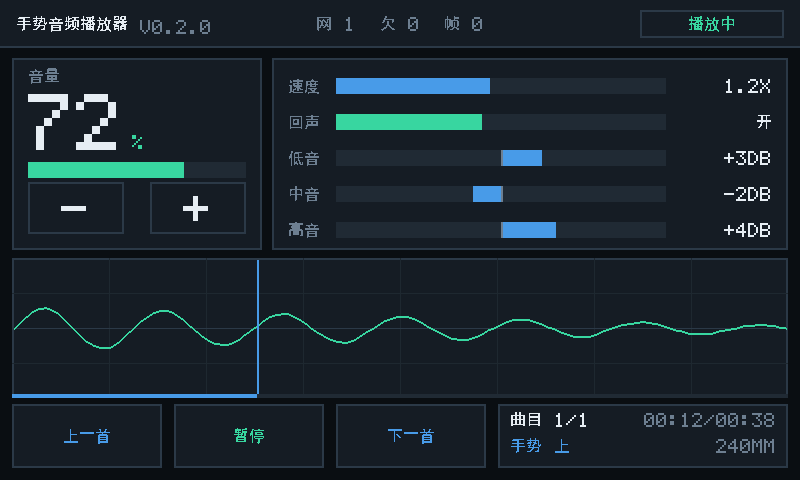
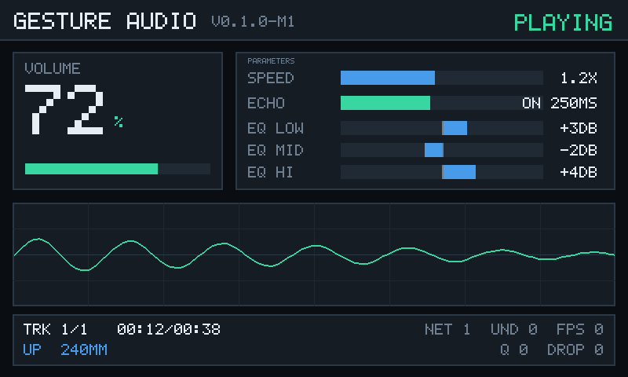

STEP 01 / 07 · 输入
WAV 读取
只吃 PCM 16bit 的 WAV，44.1kHz 立体声交织——板端原生采样率，避免二次转换。状态机负责播放、暂停、切歌与 EOF；没有 MP3 解码，这是明确的范围外。
- 格式
- WAV / PCM 16-bit
- 采样率
- 44.1 kHz
- 声道
- 2 ch · S16_LE
GEC6818 · ARM CORTEX-A53 · 纯 C
手在传感器上方扫过，音量、速度、曲目与音效随之改变。800×480 的 LCD 同步画出参数与波形，一台 PC 还能经 TCP 接入做同样的事。一块 GEC6818 开发板，一份纯 C 代码，从采集到出声，全链路自己负责。

M4 开发版界面：中文 16×16 点阵字模与触摸映射已在 dev 实现（v0.2.0 发布时尚未做），待板端实测。截图由主机版 --dump-bmp 导出，与 framebuffer 同源。
当前开发版：M4 中文界面与触摸已在 dev 实现 · M2 传感器 sim 后端 · M6 主机侧闭环
看进度与限制01交互
PAJ7620U2 在模块里完成识别，A53 只读结果寄存器，20ms 轮询一次。七类语义对应七种播放动作，距离五到十五厘米，不必碰到任何东西。
按住并扫过方向键 网页模拟
传感器尚未到货，板端当前跑 sim 后端（每 3 秒一个脚本手势）。下面的模拟器只复刻七类语义与交互手感，不代表真机识别率；真机识别距离 5–15cm，强光环境需实测。方向键可触发上下左右，其余三种手势请用右侧按钮。
事件流ctrl_msg_t
PAJ7620U2 → gesture_t → 动作
GESTURE_UP音量 +5GESTURE_DOWN音量 −5GESTURE_LEFT上一首GESTURE_RIGHT下一首GESTURE_PUSH播放 / 暂停GESTURE_PULL速度循环 +0.2×GESTURE_HOVER回声开关02声音链
播放管线逐级可旁通。重采样负责变速，回声与三段均衡负责空间和音色，变调负责演示彩蛋——每一级都能单独关掉，关掉之后信号原样通过。
左右滑动，查看完整七级 →
STEP 01 / 07 · 输入
只吃 PCM 16bit 的 WAV，44.1kHz 立体声交织——板端原生采样率，避免二次转换。状态机负责播放、暂停、切歌与 EOF；没有 MP3 解码，这是明确的范围外。
STEP 02 / 07 · 变速
变速时先低通再抽取：Blackman 窗 sinc，64 抽头 × 256 相位。1k 正弦在 2.0 倍速下混叠抑制 −82.5 dBc，远好于 −40 dBc 的判据；播放与离线音质工具用的是同一份 resample.c。
STEP 03 / 07 · 空间
800ms 预分配环形缓冲，20ms 抽头交叉淡化，4kHz 反馈阻尼，wet/dry 与反馈软限幅。每遍衰减 6.3 dB，90% 反馈下不自激，末段峰值归零。
STEP 04 / 07 · 清理
RBJ 二阶 Butterworth，切掉亚声与直流。10Hz 衰减 −13.1 dB，输出直流残留 0 LSB；搬动设备、开关灯带来的低频扰动不再进入后级。
STEP 05 / 07 · 音色
120Hz 低架、1kHz 峰 Q0.7、6kHz 高架，范围 ±12dB。30ms 增益斜坡让切换没有 click（−66.2 dBFS），三套预设 standard / vocal / demo 走命令行，不进冻结的通信协议。
STEP 06 / 07 · 彩蛋
时域颗粒移调，双读头 + 互补三角交叉淡化，上下各 12 个半音。默认旁通，只在演示时打开；最大偏差 16.1 音分，代价是轻微 warble——这条限制写在发布说明里。
STEP 07 / 07 · 输出
0.9FS 以下线性直通，之上用 g = t / (1 + t) 渐近饱和。满幅叠加 EQ +12dB 后，硬削波样本 0 / 88200。输出交给 ALSA（plughw:0,0），主机版走空 sink。
SOURCE
19 项离线指标由 tools/audio_quality.c 测量，链接的是与板端同一份 effect.c / resample.c。
看完整指标表 ↗
03架构
三种输入都只是指令的生产者：把请求投进唯一一条控制队列，主控线程按仲裁规则写进参数存储，播放、显示、网络只读快照。冲突规则只写在 main.c 一处。
输入 · 生产者
唯一写者 · 主控线程
FIFO · 深度 32 · 三种来源统一入口
audio_params_t 写入后发布状态快照，消费端只读不写。
消费 · 只读
> PLAY
< OK PLAY
> VOL 72
< OK VOL 72
> ECHO on 250 40
< OK ECHO on 250 40
> EQ low -6
< OK EQ low -6
> STATUS
< STATUS vol=72 speed=1.20 state=PLAYING track=1/1 pos=12480 len=30000 echo=on,250,40 eq=-6,0,4 dist=240 gesture=UP und=0 clients=1 q=0
# 服务端每 500ms 主动推送一行 STATUS，客户端把它当心跳
纯文本，一行一条指令，未知指令回 ERR 但不断连接。状态行里塞了十几个字段，够客户端判断链路是否还活着。协议在 M1 结束时就冻结了。
协议全文 ↗
04数字
下面每个数都能在仓库里复跑：离线音质尺子、协议矩阵、内置自检。测量机和编译器会影响小数点后两位，趋势与判据不变。
全过 · make audio_quality
判据 < −40 dBc
判据 < 1 %
满幅 + EQ +12dB
真机连续 30 秒
含 4 连接与重连
不依赖声卡 / LCD / 传感器
判据 < 20 音分
SOURCE 数据来自 RELEASE-v0.2.0.md §2。11-13 换另一套编译器复跑时，1k 混叠为 −76.3 dBc、THD+N 0.0149%，同向达标——换测量机时请固定同一编译器再比对。
11/11–11/13
12 个头文件冻结候选，19 项指标判据先立起来。
11/16–11/17
选型定为 PAJ7620U2，硬件待到货；sim 后端可用。
11/18–11/20
播放状态机收敛，D1–D3 缺陷由协议矩阵抓出并修复。
11/23–11/24
v0.2.0 后已在 dev 实现中文界面与触摸，待上板实测。
11/25–11/26
提前完成：回声、EQ、高通、变调，19/19 全过。
11/27–11/30
主机侧闭环，60/60；板载 eth0 PHY 不通。
12/1–12/4
联调、日志、演示彩排。

同一块屏，两代界面。两张图都由主机版 --dump-bmp 导出。
课程项目的可信度，多半来自这里。
Cannot attach to PHY -19。远程 TCP 只在主机侧闭环验证；板端部署只能走串口或 TF 卡，串口约 5 KB/s。
当前跑 --sensor sim。PAJ7620U2 选型、映射、接线方案已定，实测识别率与延迟要等板子插上模块。
必须随包带交叉编译的 libasound.so.2.0.0 与 alsa 配置树，设备按 default → plughw:0,0 → hw:0,0 回退。
PCM 16bit，没有 MP3 解码。17MB 素材经串口要传五十多分钟，演示请用裁剪版。
时域颗粒算法有轻微 warble，默认关闭，只在演示与彩排时打开。
05开始
ALSA、framebuffer、I2C 三处板端接口都留了主机退化路径。make 一条命令，采集、仲裁、播放、显示、网络就能在 PC 上跑起来；离线音质工具链接的是板上同一份代码。
make # 主机版，不链接任何硬件库
./build/gesture_audio --selftest # 19 通过 / 0 失败 / 1 跳过
./build/gesture_audio --dump-bmp /tmp/ui.bmp
# 直接导出 LCD 版式，拷回电脑看逻辑层与音质链全部可跑；--eq-preset vocal --pitch 7 可以在 PC 上比较音效预设与变调。自检口径：主机 19 通过 / 1 跳过，板端 20/20，两套口径都对。
# 前缀必须与板端 loader 一致（本板软浮点 /lib/ld-linux.so.3）
make BOARD=1 CROSS=arm-linux-
# 板端：运行库与 alsa 配置树已部署在 /root/gapp
LD_LIBRARY_PATH=/root/gapp/usr/lib \
ALSA_CONFIG_PATH=/root/gapp/usr/share/alsa/alsa.conf \
./bin/gesture_audio --sensor sim /root/gapp/audio/test_44100.wav软浮点 ABI / glibc 2.23；用 gnueabihf 工具链编出的程序在板上会报 No such file or directory。板载 eth0 不通时，用串口或 TF 卡部署。
py -3.11 client/gesture_client.py \
--host <板子IP> --port 8888
py -3.11 client/gesture_client.py --cli \
--cmd "STATUS" --cmd "VOL 70"2 秒心跳，断线后按 0.5 → 1 → 2 → 4 → 5 秒指数退避重连；服务器每 500ms 推一行状态。最多 4 个客户端，第 5 个会收到 ERR 连接数已满。
GEC6818 / C / 2026.11